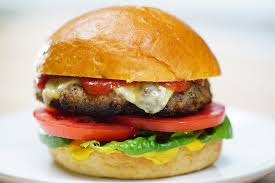

Home
Welcome to our homepage!
Gallery
This are the best and cool nature related photos: I'm not crazy about the paint effect here, but I do like the overall effect of the early spring trees against the wonderful blue of those hills


Menu
Explore our delicious menu:
-
How to make burger
Preheat an outdoor grill for high heat and lightly oil grate.
Food Item 1 
Whisk together egg, salt, and pepper in a medium bowl
Add ground beef and bread crumbs and mix with your hands or a fork until well blended. ...
Form into four 3/4-inch-thick patties. ...
Place patties on the preheated grill. ...
Serve hot and enjoy! -
How to make pizza
Start with a crust. ... Add a sauce. ...
Add some veggies, such as:
Try some fruit on your pizza, such as:
Add some protein, such as:
Add cheese. ...
Bake your creation in a hot oven (450 F or above). ...
Whole-wheat Pizza Crust.